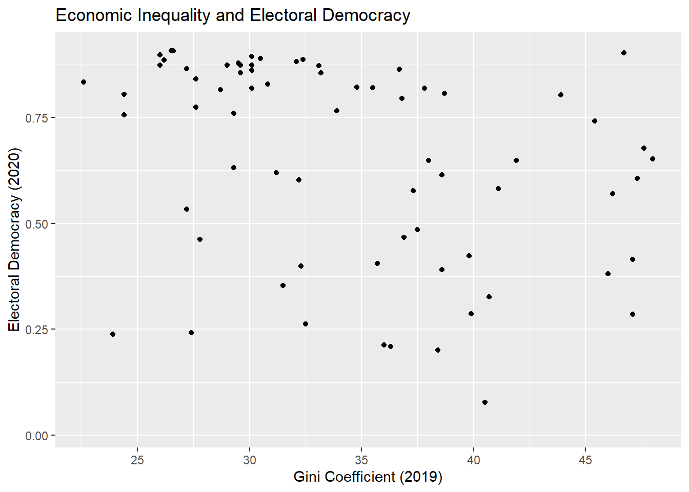
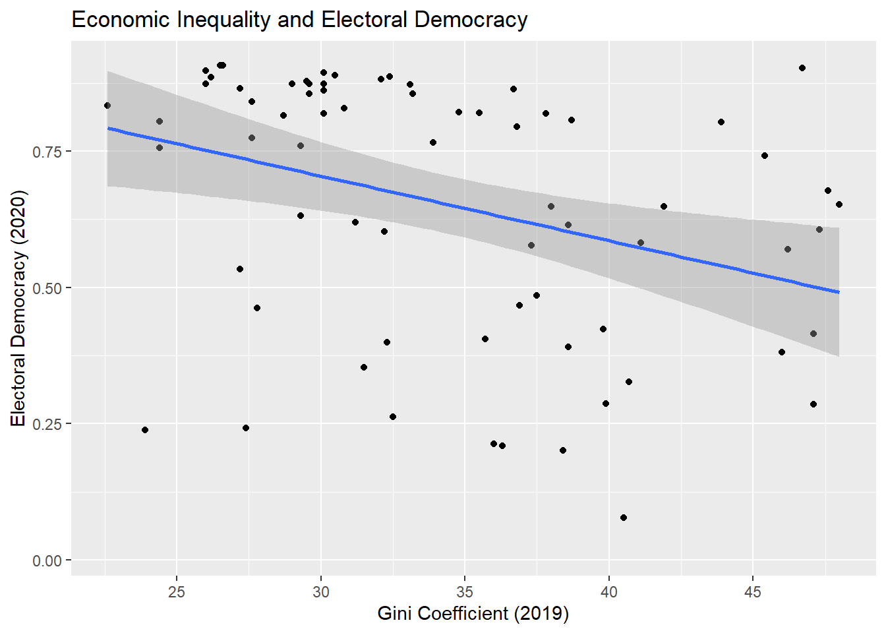

1Investigating Relationships between Continuous Variables
This chapter focuses on how to examine bivariate relationships between continuous variables in R. It will discuss how to use covariance, correlation, and linear regression models to summarize bivariate relationships.
We begin our R script by loading relevant libraries and by loading our data. These libraries are already installed on university computers but must first be loaded before use; you can use the command in Appendix B to install these libraries on your personal computer. We will use a dataset that contains information about the political and economic characteristics of countries from across the world. The dataset (demdata.rds) is available on Brightspace alongside a codebook.
#Packageslibrary(rio) #loading datalibrary(sjPlot) #for obtaining overviews of data objectslibrary(tidyverse) #data manipulation and plottinglibrary(modelsummary) #For creating correlation tables#Datademdata <-import("demdata.rds") |>as_tibble()
1
You do not always need as_tibble() as shown here. We do this here because it is easier to show larger datasets with them. See Statistics I, 2.1.
Warning
Make sure to create a project folder for the course in which you save all of your data files, assignments, etc. as this will make working with R easier. The process for doing so is covered in Statistics I, 1.5. Also, remember to use syntax to import data using the import() function from the rio package. See Section A.1.2.
1.1 Recall: Peeking Inside Data Objects
We have loaded a data file…but what’s inside it? Datasets often come with codebooks that provide information about the variables in the dataset. We can also look into our data object in R to learn more about its contents as well. We can do this in a few ways.
For instance, we can enter the name of the object in the Console:
If our dataset is a tibble (like here), then we will see a nice overview of the first few variables (columns) and observations (rows) in the dataset.
We may want to see a list of the variables in our dataset and some of their attributes. You learned how to do this using the str() function in Statistics I (see here). A simpler overview of a data object is provided by glimpse() and is particularly useful when one wants to quickly see the names of columns in an object. We do so here for a shorter version of the dataset so that we do not make the output unnecessarily long for what we want to show you.
#Smaller version of the dataset for display purposesdemdata_sub <- demdata |>select(v2x_egaldem, TypeSoc2005, HDI2005, TYPEDEMO1984, gini_2019)glimpse(demdata_sub)
Finally, one can use the view_df() function from the sjPlot library to see the names of the columns in the object alongside labels for the variables (if any) and information about the values that the variable can take on. This information will be provided in the Viewer pane. You can then use the click on the “Show in new window” button to view the full list in an open browser tab.
view_df(demdata_sub)
1
The sjPlot library was loaded at the beginning of the document. You need to load it first before using this command.
Data frame: demdata_sub
ID
Name
Label
Values
Value Labels
1
v2x_egaldem
range: 0.0-0.9
2
TypeSoc2005
Type of human development, (3-cat, classified from
HDI) (UNDP 2008)
1
2
3
Low human development
Medium human development
High human development
3
HDI2005
Human Development Index (HDI), 2005 100-pt scale
(UNDP 2007)
range: 0.3-1.0
4
TYPEDEMO1984
Type of democracy, 1984
1
2
Autocracies
Democracies
5
gini_2019
range: 22.6-48.0
Output Explanation
view_df() creates output with the following columns:
Name: This provides the variable name
Label: This provides the label of the variable if there is one. This is a short description of what the variable is supposed to measure.
Values: If the variable is a continuous variable, then this will likely show “range: X-X”. For instance, the v2x_egaldem variable ranges from 0 to 0.9. If the variable only contains a few discrete values, then those will be shown instead (as with the variable TypeSoc2005).
Value Labels: It is sometimes the case that variables will have labels that tell you what each specific value on the variable means. For instance, observations will have a 1 on the TYPEDEMO1984 variable if they were “Autocracies” in 1984, but a 2 if they were “Democracies”.
Warning!
view_df() is a very nice way of getting an overview of a data file for yourself. However, we ask that you do not include it in the final version of your R assignments. The data files that we will use often have many columns (variables), so leaving view_df(data) in your .rmd file when knitting the final project is likely to produce a huge table that increases the difficulty of reading through your assignments. It is seldom a good idea to make it harder to evaluate your work! Use it when you load the data and are working on your assignment, but remove that bit of syntax before producing the final knitted output.
1.2 Visualizing Bivariate Relationships with a Scatterplot
Our initial example concerns the relationship between a country’s level of economic inequality and its level of electoral democracy.
The variable gini_2019 contains data on a country’s level of economic inequality and can take on values continuously between 0-100 (higher values = more inequality).1 The variable v2x_polyarchy, meanwhile, contains data on the level of electoral democracy in a country as of the year 2020. This measure ranges continuously between 0 and 1 with higher values indicating a more democratic political system.
We can obtain a sense of the relationship between two continuous variables with a scatterplot. See Chapter 8 in the Statistics I book for more on the use of ggplot(), including additional options for creating nice looking scatterplots.
ggplot(demdata, aes(x = gini_2019, y = v2x_polyarchy)) +geom_point() +labs(title ="Economic Inequality and Electoral Democracy", x ="Gini Coefficient (2019)", y ="Electoral Democracy (2020)") +scale_x_continuous(breaks =seq(from =25, to =45, by =5))
Warning: Removed 109 rows containing missing values or values outside the scale range
(`geom_point()`).

Output Explanation
The output above includes a “warning”: “Warning: Removed 109 rows containing missing values (`geom_point()`).”. This occurs because there are observations in the dataset that do not contain data on either or both of the variables being plotted.
In general, warnings in R are often non-critical issues that occur when R encounters something unusual but not severe enough to stop execution. The code continues to run after issuing the warning. Warnings can sometimes be safely ignored, but it is important to investigate and understand them to ensure that a more serious issue is not occurring.
Here is how to read the syntax above:
ggplot(
This tells R that we wish to plot data using the ggplot2 package from the tidyverse library.
demdata,
This is the name of the data object that contains the variables we wish to plot. Replace this with the name of your data frame.
aes(x = gini_2019, y = v2x_polyarchy))
This provides R with basic details about how the figure should look (its “aesthetic mapping”). Here, we tell R that we want gini_2019 to be plotted on the x-axis and v2x_polyarchy to be plotted on the y-axis. We typically put the variable we consider the dependent variable on the y-axis of a scatterplot and the independent variable on the x-axis.
geom_point()
This tells R what type of plot that we want, in this case a scatterplot. Each point is a different observation in our data. The position of each point is determined by the values associated with the observation for the variables on the x- and y-axes.
labs(…)
The information in this parenthesis tells R how we wish to label the axes and what title to provide to the plot.
scale_x_continuous(breaks = seq(from = 25, to = 45, by = 5))
This line tells R that the x-axis should feature breaks every five spaces between the values of 25 and 45.2
Warning!
We changed the number of breaks on the x-axis in this example to make it easier to locate the different points along the x-axis in this particular figure. You may not need to do this in your own examples - the default output is oftentimes just fine. If you are using the syntax that we provide as a starting point for your own analyses, then stop and think about what needs to be updated to produce sensible output. For instance, if you simply used the syntax above and the x-variable you were trying to plot instead ranged from 0 to 10, then the plot may not include all of the data in your dataset or may omit the breaks entirely or produce some other error. Copy, paste, and update.
See Section 8.1 for additional instructions on how to create effective scatterplots and guidelines for discussing their contents in reports.
1.3 Covariance
A scatterplot provides a graphical overview of the relationship between two variables. When we look at countries with a Gini coefficient value below 30, then we tend to see markers in the upper-left hand corner of the figure. However, the markers tend to drift downward on the y-axis when we move left to right on the x-axis. This implies that inequality is negatively related to democracy (inequality goes up, democracy goes down).
We can use the covariance statistic to more formally describe the statistical relationship between the two variables and double-check our interpretation of the figure. We can obtain the covariance between two variables using the cov() function in R. We do not need to load any packages to use this command.
cov(x = demdata$gini_2019, y = demdata$v2x_polyarchy,use ="complete.obs")
[1] -0.560385
Here is how to read this syntax:
cov(
This indicates the name of the command.
x = demdata$gini_2019,
This tells R that we wish to use the variable gini_2019 from the data object demdata as our x-variable. You would replace demdata with the name of your data object and gini_2019 with the name of the x variable you are interested in.
y = demdata$v2x_polyarchy,
This tells R that we wish to use the variable v2x_polyarchy from the data object demdata as our y-variable. We typically specify the variable we think of as the independent variable as “x” and the variable considered the dependent variable as “y”. However, it does not matter which variable we label as X and which we label as Y in this command - we would obtain the same results either way.
use= "complete.obs")
This tells R that we wish to use observations only if they have full (non-missing) data on both variables.
The covariance statistic is -0.56. This is consistent with our earlier reaction to the scatterplot as a negative covariance statistic means that higher values of one variable (gini_2019) tend to go with lower values of the other variable (v2x_polyarchy).
1.4 Correlation Coefficients
We can also use a correlation coefficient to describe the relationship between two continuous variables. Unlike the covariance statistic, correlations provide a standardized measure of association so that we can compare correlations with one another.
There are a variety of correlation coefficients that one can use. The most appropriate one for interval/ratio (continuous) data is the Pearson correlation coefficient (often referenced with an italicized letter r: \(r\)). We can obtain this statistic using the cor.test() command. This command is built-in to R and does not require you to load an additional package.3
cor.test(x = demdata$gini_2019, y = demdata$v2x_polyarchy, method ="pearson")
Pearson's product-moment correlation
data: demdata$gini_2019 and demdata$v2x_polyarchy
t = -3.0433, df = 68, p-value = 0.003325
alternative hypothesis: true correlation is not equal to 0
95 percent confidence interval:
-0.5374741 -0.1211040
sample estimates:
cor
-0.3462257
Here is how to read this syntax:
cor.test(
This is the name of the command.
x = demdata$gini_2019
Here we specify that we want to use the variable gini_2019 from the demdata object as one of the variables in the correlation.
y = demdata$v2x_polyarchy
Here we specify the other variable in the correlation. Much as with the cov() function, it is conventional to treat our IV as “x” and our DV as “y” in this command even though the results would not change if we flipped things around.
method = "pearson")
This tells R which type of correlation coefficient to calculate, in this case the Pearson correlation coefficient. Sometimes the assumptions that underlie the Pearson correlation are not met and we will need to ask R to estimate a different type of correlation coefficient. We would do so by changing this line of syntax. For instance, we would change this to method = spearman to calculate a Spearman correlation.
Output Explanation
In R, the output shows:
‘t =’: the t-value or t-statistic for the correlation
‘df =’: the degrees of freedom
‘p-value =’: the p-value for the correlation (i.e., the probability of observing a t-value of that size or larger assuming the null hypothesis of no correlation & model assumptions are correct)
‘95 percent confidence interval:’: the 95% confidence interval for the correlation coefficient
‘cor’: the correlation coefficient
The correlation coefficient in this instance is -0.35 (rounding to two digits). How can we interpret this number?
Interpretation
Correlation coefficients range from -1 to +1 where:
-1 = a perfect negative linear relationship. In such cases, all observations would fall on a negatively sloped line.
0 = no linear relationship
+1 = a perfect positive linear relationship. In such cases, all observations would fall on a positively sloped line.
A positive correlation thus indicates that we expect one variable to increase in size when the other variable increases in size. A negative correlation indicates that we expect one variable to decrease in size when the other variable increases in size.
Correlation coefficients provide a standardized measure of the magnitude and direction of the relationship between two variables. Is -0.35 a big or large relationship? One commonly used guideline for interpreting the magnitude of correlation coefficients comes from Cohen (1988):
\(r \leq\) |0.1|: Very small relationship
|0.1| \(\leq\) |0.3|: Small relationship
|0.3| \(\leq\) |0.5|: Moderate relationship
\(r \geq\) |0.5|: Large relationship
In this example, then, we would say that the relationship between the two variables is moderately sized.
A final note: This is the rule of thumb that we will use in class. However, it is not the only one. Ultimately, what constitutes a “substantively important” or meaningful relationship may be context dependent. Thus, while the rule of thumb shown above is sufficient for discussions in Statistics II, discussions in reports/papers should also take into account the broader context of the study.
Cohen, Jacob. 1988. Statistical Power Analysis for the Behavioral Sciences. 2nd ed. Hillsdale, NJ: Erlbaum Associates.
1.5 Bivariate Linear Regression
The final way of summarizing a bivariate relationship where both variables are continuous (interval/ratio) is via a bivariate regression model.4 In the example below we will fit a bivariate linear regression to summarize the relationship between inequality and electoral democracy.
1.5.1 Performing and obtaining results
m1 <-lm(v2x_polyarchy ~ gini_2019, data = demdata)
The syntax above performs the desired linear regression. Here is how to read the syntax:
m1 <-
This portion of the command tells R to create a new object called “m1” and to assign to it the results of the ensuing analysis. This is not necessary to run the regression, but is traditional to do because we will very often be working with the results of a regression model using other commands that require such an object. You would change the name of the object as needed in your own reports.
lm(
This is the name of the command: lm = linear (regression) model.
v2x_polyarchy ~ gini_2019,
This is how we specify the variables in a regression. The variable name to the left of the tilde (“~”) is the dependent variable. The variable name to the right of the tilde represents an independent variable. See the Warning box below.
data = demdata)
The command concludes by specifying the data object that contains the variables to be used in the model. This always comes at the end of the command.
Warning!
There is an important difference between cor.test()/cov() and lm(). The order of variables in the former two commands does not matter. cov(x = demdata$gini_2019, y = demdata$v2x_polyarchy,…) and cov(x = demdata$v2x_polyarchy, y = demdata$gini_2019,…) will produce the same output. But, lm(v2x_polyarchy ~ gini_2019,…) and lm(gini_2019 ~ v2x_polyarchy,…) will not!. The dependent variable in a linear regression (the variable that we are trying to predict or explain) must always be on the left side of the tilde. A first thing to figure out when fitting a regression model is which variable is supposed to be the dependent variable.
How can we see the results from our regression when we store it to an object like in the syntax above? One way is to call the object that we just created by typing its name in the Console and hitting enter.
This default output only shows the coefficient values for the Intercept term and the slope for the independent variable(s) in the model, inequality in this instance.5 It is thus more customary to use the summary() command as this provides more information about the results of our model:
summary(m1)
Call:
lm(formula = v2x_polyarchy ~ gini_2019, data = demdata)
Residuals:
Min 1Q Median 3Q Max
-0.5389 -0.1502 0.0903 0.1668 0.3965
Coefficients:
Estimate Std. Error t value Pr(>|t|)
(Intercept) 1.060311 0.136512 7.767 5.8e-11 ***
gini_2019 -0.011859 0.003897 -3.043 0.00333 **
---
Signif. codes: 0 '***' 0.001 '**' 0.01 '*' 0.05 '.' 0.1 ' ' 1
Residual standard error: 0.2225 on 68 degrees of freedom
(109 observations deleted due to missingness)
Multiple R-squared: 0.1199, Adjusted R-squared: 0.1069
F-statistic: 9.262 on 1 and 68 DF, p-value: 0.003325
Output Explanation
In R, the output shows:
“Call”: The regression model being fit.
“Residuals”: This provides information about the model residuals. We will examine residuals in further depth in later chapters.
“Coefficients”: This provides coefficients from the model, including…
Estimate: The coefficient values for each term in the model. We can see a coefficient value for our Intercept term (“(Intercept)” = 1.060311) and for the independent variable (“gini_2019” = -0.0118)
Std. Error: The standard error of the coefficient
t value: The t-statistic or t-value for the coefficient
Pr(>|t|): The p-value associated with the t-statistic. t- and p-values will be discussed in Chapter 3
The bottom portion of the output displays statistics relating to the “fit” of the model, which will be discussed further in Chapter 6 .
The coefficient for economic inequality is negative much as was the covariance and correlation; this is because they are each different ways of summarizing the linear association between the two variables.
Interpretation
The Estimate column provides the coefficient values from our regression model.
(Intercept): What is the average value of the DV we expect to observe based on this model if the independent variable = 0. Here: if we could observe countries with a score of 0 on the inequality variable, then we’d expect the average democracy score among them to be 1.06. This is seldom of direct interest and especially so when our IV(s) do not or cannot take on a value of 0.
Coefficients for Continuous Independent Variables (e.g., gini_2019): The coefficient for a continuous independent variable is interpreted as the change in the expected mean of Y given a one unit increase in X (i.e., as the slope of a straight line). Here, our model tells us to expect the level of electoral democracy to decrease by approximately -0.01 scale points, on average, with each one unit increase on the inequality variable. See Section 8.3 on how to report this information in class assignments and in papers.
The coefficient for gini_2019 is -0.01. How “big” of a relationship is this? Regression coefficients are not standardized so we generally cannot directly assess the magnitude of an effect implied by a regression coefficient simply from its size. We will discuss some tools that researchers use to help them communicate effect sizes in later sections (e.g., standardized coefficients in Section 4.2 and predicted values in Chapter 5). Ultimately, discussions of the substantive significance of a regression coefficient requires thinking about what a meaningful effect would be in the particular context of the regression that you are performing.
1.5.2 Adding a regression line to a scatterplot
We can incorporate information from our regression model into visual displays in a variety of ways. One common way of doing so is to add a regression line to a scatterplot of the two variables.
ggplot(demdata, aes(x = gini_2019, y = v2x_polyarchy)) +geom_point() +geom_smooth(method ="lm") +labs(title ="Economic Inequality and Electoral Democracy", x ="Gini Coefficient (2019)", y ="Electoral Democracy (2020)") +scale_x_continuous(breaks =seq(from =25, to =45, by =5))
`geom_smooth()` using formula = 'y ~ x'
Warning: Removed 109 rows containing non-finite outside the scale range
(`stat_smooth()`).
Warning: Removed 109 rows containing missing values or values outside the scale range
(`geom_point()`).

This syntax is identical to what was shown at the beginning of the document except for one crucial difference. We added the following line:
geom_smooth(method = "lm") +
Here, we ask R to plot a “smoothed” line to our data to summarize the relationship between the two variables (hence, geom_smooth). The information within the parenthesis (method = "lm") indicates what type of line: a linear regression model (“lm”) line. This line has the same properties as the one estimated in the regression above. The grey area around the line, meanwhile, provides the confidence interval for the estimate. We will discuss confidence intervals in a future chapter and week of the class.
This measure of inequality can in theory take on any value from 0 to 100. However, we only observe countries in this dataset with values between 22.6 and 48.↩︎
You can learn more about the seq() by typing ?seq into your R consult and hitting enter. That goes for any other function as well.↩︎
If you would like to perform multiple bivariate correlations at once, then the correlation library may be of interest. However, that package is not needed for this course.↩︎
As we will see in future sections, we can also use a linear regression model to predict a continuous outcome variable with binary/categorical independent variables as well.↩︎
We can also obtain the model’s coefficients via the coef() function. For instance: coef(m1) would return just the coefficients from the model. We will use another tool for displaying the output of a regression model in coming classes: the tidy() function from the broom package.↩︎